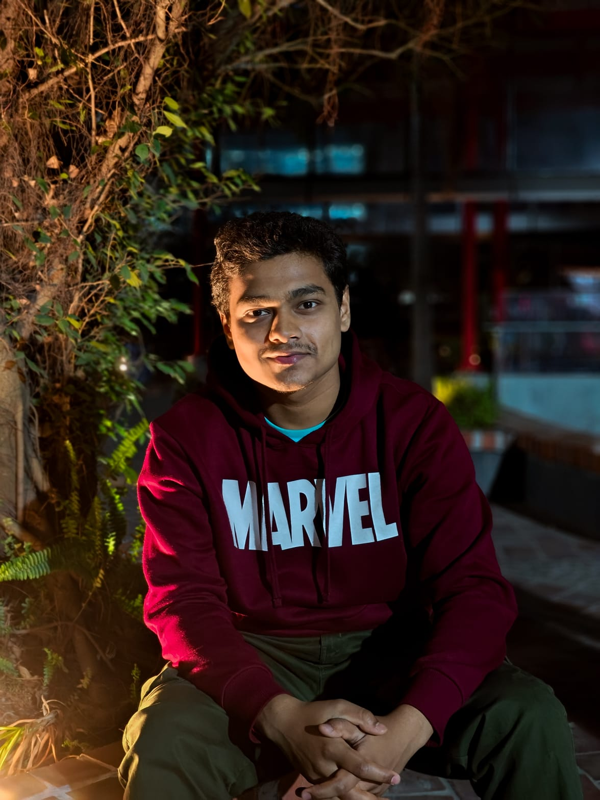

I'm Bishwajit Saha!
I am a 3rd-year Computer Science and Engineering student who approaches technology from a bird's-eye view. While I have a solid structural foundation in C++ and Java, my true passion lies in systems architecture, cloud infrastructure, and DevOps.
I specialize in designing deployment blueprints, configuring Linux servers, containerizing applications, and integrating complex backend environments so they run flawlessly. I don't just write code—I orchestrate it.
Feel free to get in touch or take a look at my past architectural work below.
A fully containerized, high-availability Python application integrated with a FreePBX server. I successfully bypassed strict SIP host firewalls using advanced Docker network routing and automated real-time database management.
Engineered and deployed a containerized Asterisk/FreePBX routing engine utilizing Python, Docker Compose, and host-networking to bypass restrictive SIP firewalls.
Currently in my 3rd year of Computer Science and Engineering, focusing on core programming foundations in C++ and Java, alongside server administration.